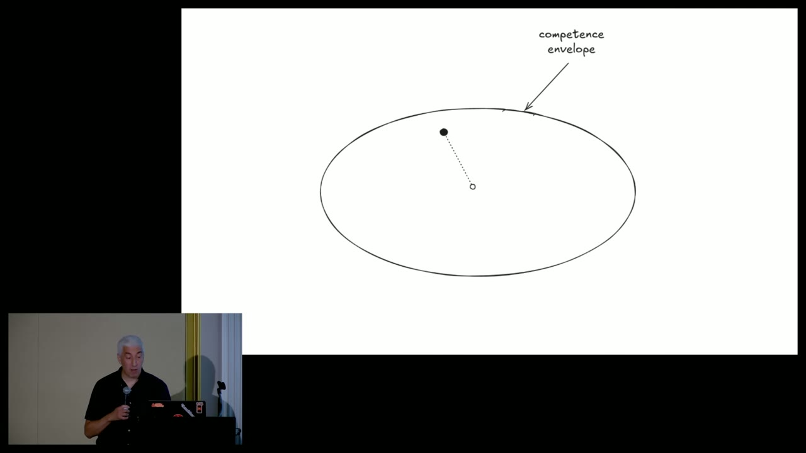
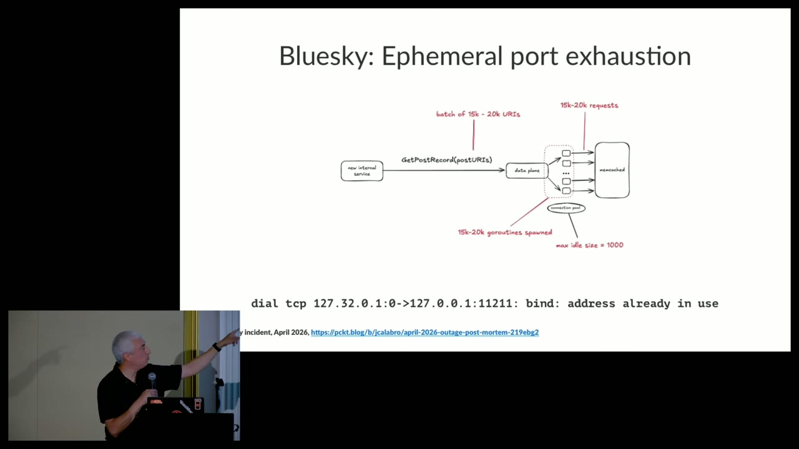
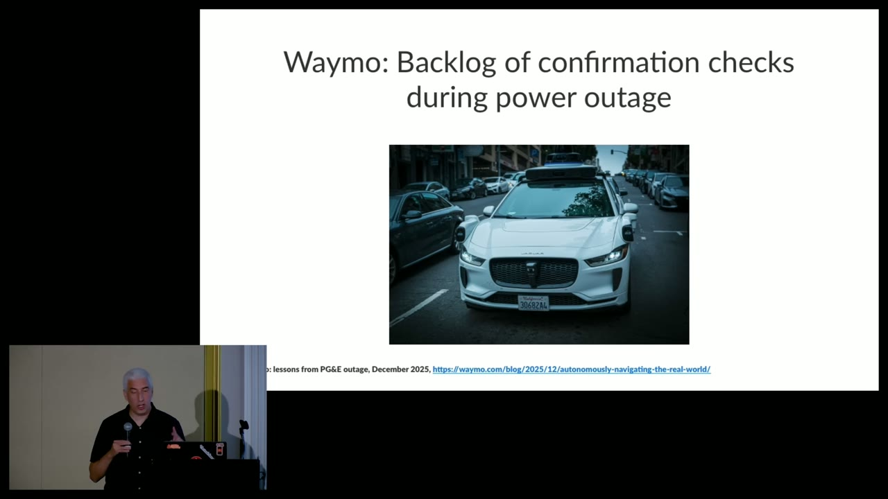

At scale, failure is rarely the moment when one function returns the wrong value. It is the moment a finite sociotechnical system can no longer adapt to the demands placed on it. Hochsteinʼs talk gives that moment a useful name—saturation—and connects it to a larger resilience-engineering argument: capacity is necessary, but the ability to change strategy under pressure is what keeps surprise from becoming collapse.
1. Replace the machine metaphor with a boundary
The talk begins with Leslie Lamportʼs contrast between computing as logic and computing as biology. Lamportʼs concern was that systems were becoming too complicated for any one person to understand. Formal specification attacks that problem by making selected behavior precise. Hochstein does not reject that project; in the Q&A he treats it as valuable for parts of a design. His narrower point is operational: even correctly specified components are embedded in organizations, traffic patterns, deployment machinery and dependencies that do not fit inside one complete model.
The useful unit of analysis is therefore not "the code" but a system operating inside a competence envelope. David Woodsʼs theory of graceful extensibility describes systems as having a finite region of competent performance. Pressure moves the system toward a boundary. Once events exceed the base envelope, continued performance depends on whether people and machinery can deploy additional adaptive capacity. This framing explains why a dashboard can be green right until several individually tolerable pressures interact.

2. Saturation is finite supply meeting effective demand
The talk tours physical limits—CPU run queues, memory, garbage collection, disks, inodes and network capacity—and virtual limits such as worker pools, bounded queues, connection limits and rate limits. The distinction matters less than the shared mechanism: arrival or retention of work outpaces the systemʼs ability to complete or discard it. Brendan Greggʼs USE method provides a practical first pass for hardware resources: examine utilization, saturation and errors for each resource. Saturation is the queued work, not merely a high utilization percentage.
Virtual bounds can be deliberate safety valves. A connection pool or queue that refuses additional work before the host exhausts memory localizes the damage. The design question is not "bounded or unbounded?" but which failure mode is preferable when the bound is reached. A queue trades refusal for latency and memory; retries trade immediate failure for more future load; a larger pool can trade throughput for contention at the next dependency.
| Pressure | Leading evidence | Common trap | Useful control |
|---|---|---|---|
| CPU | Runnable queue and latency rising together | Scaling callers increases downstream work | Admission control; shed optional work |
| Memory / GC | Allocation rate, pause time, reclaim and OOM events | Treating collector CPU as the original cause | Bound live sets; reduce retention; degrade features |
| Connections / ports | Pool wait, socket states, allocation failures | Adding workers consumes the scarce resource faster | Reuse connections; cap concurrency; fail fast |
| Queues | Age of oldest item and drain rate, not depth alone | A growing queue appears to be successful intake | Bound, prioritize, expire and expose backlog |
| Logs / storage | Write amplification, free bytes and free inodes | Error logging magnifies the triggering failure | Sample, rate-limit, rotate and reserve capacity |
3. Three incidents expose different coupling
Bluesky: a large batch found a cross-layer loop
Hochstein recounts Blueskyʼs April 2026 outage using engineer Jim Calabroʼs postmortem. A request containing roughly 15,000–20,000 URIs expanded into goroutines and network activity. Ephemeral-port pressure and logging increased thread and memory demand; garbage collection then consumed more CPU, reinforcing the slowdown. The lesson is not "Go cannot handle concurrency." It is that apparently independent limits formed a feedback loop, so adding concurrency reduced the systemʼs capacity to recover.

Slack: adaptation amplified the original pressure
Slackʼs January 4, 2021 outage followed the post-holiday return to work. Network saturation caused requests to wait, which occupied web threads. Autoscaling correctly observed distress and provisioned more capacity, but that activity increased load on the provisioning service and encountered its own file-descriptor, API-quota and autoscaling-group limits. Every local control had a rationale; together they created cascading saturation. Googleʼs SRE guidance describes this general pattern: resource exhaustion, latency and retries can propagate failure through a distributed system unless load is rejected or contained.

Waymo: the safe fallback can itself be finite
During San Franciscoʼs December 2025 power outage, dark traffic signals increased ambiguity for autonomous vehicles. Waymoʼs official account says vehicles treated non-functioning signals as all-way stops and some requested fleet-response confirmation; the resulting volume contributed to congestion and some vehicles remaining stationary. Hochstein labels the operational inference that matters: confirmation is a safety mechanism, yet its service capacity is finite. Fail-safes need capacity models and degraded modes just as primary services do.

4. The routes to saturation are forms of amplification
Desired load can simply grow. More dangerous are mechanisms that make effective demand larger than user demand: thundering herds after a shared event, retry storms, high fan-out, pathological but valid inputs, batch work, expensive ad hoc queries and error logs emitted once per failed item. Slow leaks are especially deceptive because regular deployments reset them before ordinary monitoring sees the boundary.
Cloudflareʼs July 2019 outage is a precise example of functionally valid work becoming operationally catastrophic. A regular expression in a Web Application Firewall rule caused excessive CPU consumption. The rule was deployed globally and CPUs handling HTTP traffic exhausted rapidly. Correctness review alone was insufficient; the missing question was how resource cost behaved for adversarial input and at global rollout speed.
5. Graceful extensibility is a repertoire, not spare capacity
Because every implemented limit is finite and some interactions are unknown, Hochstein argues that teams cannot engineer saturation away. They can move known limits outward, simplify coupling and add safety margins. But they also need optionality: break-glass access, controlled traffic blocking, dynamic configuration, feature flags, quick rollback and fix-forward paths, the ability to recycle or scale units, and people who understand which control is safe in context.
This is where Woodsʼs distinction earns its keep. Robustness is the ability to absorb a modeled disturbance within the base envelope. Graceful extensibility is the capacity to change how the system works when the disturbance exceeds that design. A feature flag is only latent optionality; it becomes adaptive capacity when responders can recognize the situation, have authority to use it, understand its side effects and can observe whether it worked.
6. Incident learning should preserve thought, not only fixes
The provocative line in the talk is that the optimal number of incidents is not zero. It is not an argument for preventable harm. It is a recognition that systems hiding all weak signals can accumulate unknown brittleness, while small contained failures can reveal boundaries. The operational goal is to reduce harmful impact while maximizing what can be learned from real pressure and from other organizationsʼ incidents.
That changes the shape of a postmortem. A list of failed components and corrective actions documents the final explanation; it often discards how responders noticed the event, which signals were ambiguous, which hypotheses were rejected, where access or knowledge was missing, and which improvised actions bought time. Those details reveal adaptive capacity. Corrective actions also carry risk: every new limit, retry, detector or automated response changes the next incidentʼs coupling.
7. A practical saturation review
- Name the critical work. Define what must still succeed under stress and what may be delayed, degraded or refused.
- Map finite resources. Include human attention, emergency authorization and dependency quotas alongside CPU, memory and queues.
- Trace amplification. Draw retries, fan-out, autoscaling, logging and recovery actions as load-producing edges.
- Choose refusal semantics. Decide where to queue, shed, expire, cache or return a partial answer before the physical limit decides for you.
- Exercise the controls. A dormant runbook or permission is not capacity. Test access, observability, reversibility and side effects.
- Preserve adaptive evidence. During review, record how people made sense of the event—not only the final root cause.
The most durable conclusion is an allocation rule: keep improving the base system, but reserve engineering attention for the means of adaptation. A taller wall helps only for pressures already imagined; a practiced repertoire helps when reality chooses a different direction.